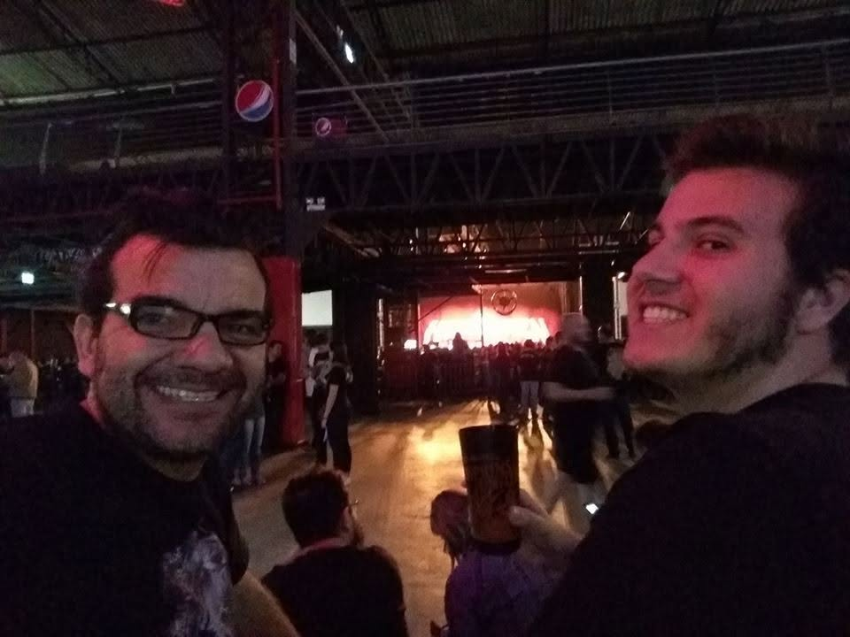

Helloween é uma banda alemã de power metal, formada em 1984 na cidade de Hamburgo. O grupo é considerado um dos pioneiros e principais responsáveis pela popularização do gênero, combinando a velocidade do heavy metal com melodias marcantes, vocais agudos e refrões épicos.
Sobre a banda
A banda ganhou grande destaque no final dos anos 1980 com os álbuns Keeper of the Seven Keys Part I e Keeper of the Seven Keys Part II. Esses trabalhos se tornaram referências do power metal e influenciaram diversas bandas que surgiram posteriormente na Europa, no Japão e em outras partes do mundo.
Ao longo de sua história, o Helloween passou por diversas mudanças em sua formação. Entre seus integrantes mais conhecidos estão Michael Weikath, Kai Hansen, Michael Kiske, Andi Deris e Markus Grosskopf. Mesmo com essas mudanças, a banda continuou lançando álbuns e realizando turnês durante várias décadas.
O estilo do Helloween é conhecido por músicas rápidas, solos de guitarra elaborados, melodias alegres ou épicas e letras que abordam temas como fantasia, humor, sociedade e reflexões sobre a vida. A tradicional abóbora, presente em capas, logos e apresentações da banda, acabou se tornando um dos seus principais símbolos.
Décadas depois de sua formação, o Helloween continua sendo um dos nomes mais importantes do metal alemão. A reunião de antigos e atuais integrantes no projeto Pumpkins United também marcou uma nova fase da banda, reunindo diferentes períodos de sua história e permitindo que músicas clássicas e mais recentes fossem apresentadas pela mesma formação.
Canções mais famosas
Era Kiske (1986-1993)
I Want Out
Eagle Fly Free
Future World
Era Deris (1994-2016)
Power
Forever and One (Neverland)
If I Could Fly
Era Pumpkins United (2017-presente)
Skyfall
Fear of the Fallen
A Little Is a Little Too Much
O show mais épico foi em...
31 DE OUTUBRO DE 2017 • PORTO ALEGRE
A turnê Pumpkins United, que celebrava mais de 30 anos de história do Helloween, realizou um dos maiores sonhos dos fãs: ver Michael Kiske e Andi Deris dividindo o mesmo palco, reunindo diferentes eras da banda em uma formação histórica.
E como se isso já não fosse especial o bastante, o show de Porto Alegre aconteceu justamente em 31 de outubro de 2017 — Halloween. Helloween tocando no dia do Halloween, em uma turnê comemorativa que reunia Kiske, Deris e Kai Hansen, parece até uma coincidência planejada.
Foi uma daquelas combinações raras em que data, lugar e momento histórico se encaixam perfeitamente, transformando o show em uma noite especialmente simbólica para os fãs da banda.
E EU ESTAVA LÁ!!!!!!!!!!

Eu e meu Pai. Helloween em Porto Alegre, no Pepsi on Stage — Pumpkins United, 31/10/2017.